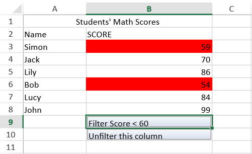

You can customize actions before and after filtering.
To customize the row filter actions, do the following:
You can do the following to customize the unfilter actions:
The following image displays highlighted rows that are created using custom filter actions.

The following code highlights filtered rows by extending the RowFilterBase class and overriding the onFilter method.
| JavaScript |
Copy Code
|
|---|---|
$(function () { var spread = new GC.Spread.Sheets.Workbook($("#ss")[0]); var activeSheet = spread.getActiveSheet(); spread.suspendPaint(); activeSheet.setColumnWidth(0, 100); activeSheet.setColumnWidth(1, 200); activeSheet.addSpan(0, 0, 1, 2); activeSheet.getCell(0, 0).value("Students' Math Scores").hAlign(GC.Spread.Sheets.HorizontalAlign.center); activeSheet.setValue(1, 0, "Name"); activeSheet.setValue(1, 1, "SCORE"); var score = [ {name: "Simon", score: 59}, {name: "Jack", score: 70}, {name: "Lily", score: 86}, {name: "Bob", score: 54}, {name: "Lucy", score: 84}, {name: "John", score: 99} ]; for (var i = 0, len = score.length; i < len; i++) { var student = score[i]; activeSheet.setValue(i + 2, 0, student.name); activeSheet.setValue(i + 2, 1, student.score); } var b1 = new GC.Spread.Sheets.CellTypes.Button(); b1.text("Filter Score < 60"); activeSheet.setCellType(8, 1, b1); var b2 = new GC.Spread.Sheets.CellTypes.Button(); b2.text("Unfilter this column"); activeSheet.setCellType(9, 1, b2); function HighLightFilter(range) { GC.Spread.Sheets.Filter.RowFilterBase.call(this, range); } HighLightFilter.prototype = new GC.Spread.Sheets.Filter.RowFilterBase(); HighLightFilter.prototype.onFilter = function (args) { if (!args) { return; } var sheet = args.sheet, range = args.range, filterRows = args.filteredRows, filterActionType = args.action; if (filterActionType === GC.Spread.Sheets.Filter.FilterActionType.Filter) { if (range.col < 0) { range.col = 0; range.colCount = sheet.getColumnCount(); } for (var i = 0, len = filterRows.length; i < len; i++) { var r = filterRows[i]; for (var c = range.col, len1 = range.col + range.colCount; c < len1; c++) { sheet.getCell(r, c).backColor("red"); } } sheet.setValue(9, 1, "Highlight the score less than 60"); } else if (filterActionType === GC.Spread.Sheets.Filter.FilterActionType.Unfilter) { if (range.col < 0) { range.col = 0; range.colCount = sheet.getColumnCount(); } for (var i = 0, len = filterRows.length; i < len; i++) { var r = filterRows[i]; for (var c = range.col, len1 = range.col + range.colCount; c < len1; c++) { sheet.getCell(r, c).backColor(undefined); } } } } var hlf = new HighLightFilter(new GC.Spread.Sheets.Range(2, 1, 6, 1)); activeSheet.rowFilter(hlf); var condition = new GC.Spread.Sheets.ConditionalFormatting.Condition(GC.Spread.Sheets.ConditionalFormatting.ConditionType.NumberCondition, { compareType: GC.Spread.Sheets.ConditionalFormatting.GeneralComparisonOperators.LessThan, expected: 60 }); hlf.addFilterItem(1, condition); hlf.filterButtonVisible(false); spread.bind(GC.Spread.Sheets.Events.ButtonClicked, function (e, args) { if (args.row === 8) { if (args.col !== undefined) { hlf.filter(args.col); } } else if (args.row === 9) { if (args.col !== undefined) { hlf.unfilter(args.col); } } }); spread.resumePaint(); }); |
|